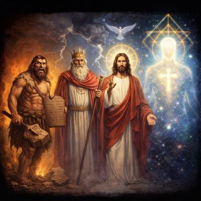

Sí, no sólo los seres vivos hemos evolucionado; también lo ha hecho «Dios» a la par del hombre. El concepto de «Dios» que hoy tienen las grandes religiones monoteístas, no es el mismo que cuando surgió. Ha experimentado una evolución histórica. En el caso del cristianismo, comenzó siendo una deidad tribal antropomórfica, hasta llegar a ser un hipotético absoluto metafísico trinitario.


En efecto, esa idea de «Dios» que hoy sostiene el cristianismo, no provino del Cielo tal como es actualmente, ni ha sido siempre la misma a través de la historia. Es más bien el resultado de un largo proceso de construcción teológica, política y filosófica, que se extendió por más de un milenio y medio. Que comenzó siendo una deidad tribal con pasiones humanas (muy primitivas), hasta llegar a convertirse en un ser metafísico omnipotente, omnisciente y trinitario. Se trata de una figura que fue transformándose al ritmo de las necesidades culturales, sociales y de poder de quienes la formularon.
Veamos las principales fases evolutivas del «Dios» cristiano:
-
Dios antropomórfico del antiguo Israel (siglos XII–VIII AEC)
El dios que hoy adoran los cristianos alrededor del mundo, comenzó en la figura de YHWH (Yahvé), un dios plural descrito en los textos más antiguos de la Biblia que reflejan un estadio claramente politeísta, o al menos mitológicamente plural. YHWH (Yahvé) aparece como una deidad con cuerpo, emociones, limitaciones y comportamientos humanos:
Camina por el jardín: «Y oyeron la voz de Jehová Dios que se paseaba en el huerto» (Génesis 3:8).
Lucha físicamente: Jacob «luchó con él» toda la noche (Génesis 32:24-30).
Se arrepiente: «Y se arrepintió Jehová de haber hecho hombre en la tierra» (Génesis 6:6).
Es derrotado tecnológicamente: «Y Jehová estaba con Judá… mas no pudo arrojar a los que habitaban en los llanos, los cuales tenían carros herrados» (Jueces 1:19).
Incluso formaba parte de un consejo divino: «Dios está en la reunión de los dioses; en medio de los dioses juzga» (Salmo 82:1). Y desde la famosa frase «Hagamos al hombre a nuestra imagen» (Génesis 1:26), delata un trasfondo politeísta. No es «Dios» quien crea al ser humano a su imagen, sino los humanos quienes proyectan su propia psicología sobre sus dioses: celos, ira, venganza, arrepentimiento, favoritismo tribal.
-
Fase henoteísta: un dios entre otros, pero exclusivo (siglos VIII–VI AEC)
Con la consolidación del Estado israelita, Yahvé se convierte en dios nacional. No se niega aún la existencia de otros dioses, pero se prohíbe su culto: «No tendrás dioses ajenos delante de mí» (Éxodo 20:3).
La formulación no dice «No existen otros dioses más que yo», sino «no los adorarás». Eso es monolatría, henoteísmo, no monoteísmo. Y Yahvé se muestra «celoso» (Éxodo 34:14), como cualquier divinidad tribal que compite por lealtades.
-
Salto al monoteísmo absoluto (siglos VI–V AEC)
Tras la destrucción de Jerusalén y el primer Templo por Nabucodonosor II en 586 AEC, aproximadamente entre los años 597 y 538 AEC, el pueblo hebreo (específicamente del Reino de Judá) estuvo exiliado en Babilonia, siendo deportada gran parte de la élite judía, lo que marcó un período crucial que reformuló su identidad religiosa y cultural. Y durante ese exilio, bajo influencia persa y mesopotámica, ocurrió una revolución teológica: Yahvé dejó de ser ‘el mejor de los dioses’, para pasar a ser ‘el único dios existente’. «Yo soy Jehová, y ninguno más hay; no hay Dios fuera de mí» (Isaías 45:5).
Nace así el verdadero monoteísmo. Y «Dios» se vuelve cósmico, trascendente, creador del universo; no sólo protector de una etnia.
-
Jesús y el judaísmo apocalíptico (siglo I)
Pero la evolución de «Dios» no paró allí. Siguió cuando surge la figura de Jesús, un supuesto predicador judío apocalíptico. Como se observa en los evangelios, Jesús nunca enseñó ningún concepto de Trinidad. Y aunque en algunas partes se identifica plenamente con «Dios» («Yo y el Padre uno somos», Juan 10:30), por lo general distingue claramente entre él y «Dios»: «voy al Padre; porque el Padre mayor es que yo» (Juan 14:28). «Subo a mi Padre y a vuestro Padre, a mi Dios y a vuestro Dios.» (Juan 20:17).
Sin embargo, su lenguaje es funcional y mesiánico, no ontológico.
-
Saulo de Tarso, y el «Cristo» preexistente (años 50–60 EC)
Es con Saulo de Tarso, «el apóstol san Pablo», que comienza la divinización teológica de Jesús: «Cristo Jesús, el cual, siendo en forma de Dios…» (Filipenses 2:5-6). «Él es la imagen del Dios invisible… Porque en él fueron creadas todas las cosas» (Colosenses 1:15-16). Es decir, Pablo transforma al Mesías judío en una entidad cósmica.
-
Los Padres de la Iglesia y el «Logos» (siglos II–III)
Pero siglos más tarde, la transformación de «Dios» continuó con los llamados «Padres de la Iglesia»: Justino Mártir, Orígenes y otros, comenzaron a identificar al «Cristo» de Pablo con el Logos platónico: una razón divina intermedia. Todavía subordinado al Padre, pero ya eterno y preexistente.
-
Constantino y el Concilio de Nicea (325 EC)
Sin embargo, los intereses políticos también fueron determinantes. Por razones políticas de unidad del Imperio Romano, termina imponiéndose esta fórmula: «Dios verdadero de Dios verdadero, engendrado, no creado, de la misma sustancia (homoousios) que el Padre». Una frase proveniente del Credo Niceno-Constantinopolitano (o Credo de Nicea), que se convirtió en una profesión de fe cristiana fundamental. Establece que el «Jesucristo» de Pablo (una fusión de Jesús y Cristo), el Hijo, comparte la misma naturaleza divina y eterna que «Dios Padre», siendo engendrado (nacido) desde la eternidad, no creado ni fabricado como una criatura, y que es consustancial al Padre. Se fija así dogmáticamente la igualdad ontológica entre Jesús y «Dios», a la vez que nace oficialmente la Trinidad.
-
Agustín de Hipona (siglos IV–V)
Pero esto no termina allí. Agustín de Hipona desarrolla una teología trinitaria psicológica y metafísica: memoria, entendimiento y voluntad como reflejos de Padre, Hijo y Espíritu. Y «Dios» se vuelve así absolutamente inmutable y «fuera del tiempo».
-
Tomás de Aquino (siglo XIII)
Y partiendo de Aristóteles, Tomás de Aquino convierte a «Dios» en:
Acto Puro.
Ser necesario.
Motor inmóvil.
Identidad entre esencia y existencia.
Así, aquel antiguo dios que caminaba por el Edén, termina convertido en una abstracción ontológica perfecta.
Esto, a pesar de que el dios de la biblia afirma ser inmutable, que «no cambia»: «Yo Jehová no cambio» (Malaquías 3:6). Pero la historia demuestra lo contrario. El concepto del «Dios» que hoy adoran los cristianos, pasó por todas estas etapas:
Siglos XII–VIII AEC, una deidad antropomórfica, tribal y limitada.
Siglos VIII–VI AEC, un «Dios» nacional exclusivo (henoteísmo).
Siglos VI–V AEC, un monoteísmo universal.
Siglo I, un Padre Supremo y un Mesías subordinado.
Siglos II–IV, un «Logos» divino preexistente.
Siglo IV, una Trinidad ontológica.
Siglos V–XIII, un absoluto metafísico inmutable.
En realidad no cambió «Dios», cambiaron los humanos que lo reinventaron para que fuera compatible con nuevas cosmologías, filosofías y estructuras de poder. Nadie hoy adoraría al dios iracundo, corporal, ignorante y derrotado por carros de hierro del Génesis. Igual que los seres vivos estudiados por Darwin, también «Dios» tuvo que evolucionar para sobrevivir. De un primitivo dios tribal antropomórfico, evolucionó hasta convertirse en lo que es hoy: un hipotético ser perfecto, absoluto metafísico y trinitario. Pero al final, la historia de «Dios» es, realmente, la historia del pensamiento humano, proyectándose a sí mismo al infinito.
[Godless Freeman]
Comentarios
Comments powered by Disqus